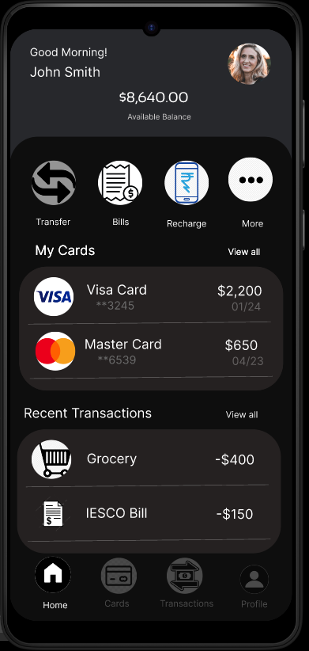
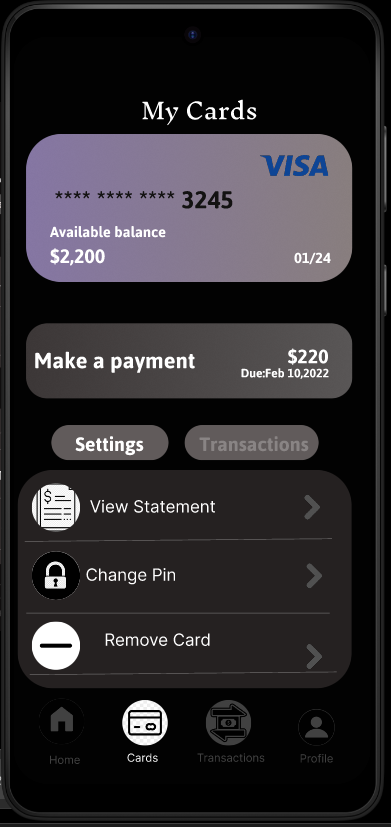
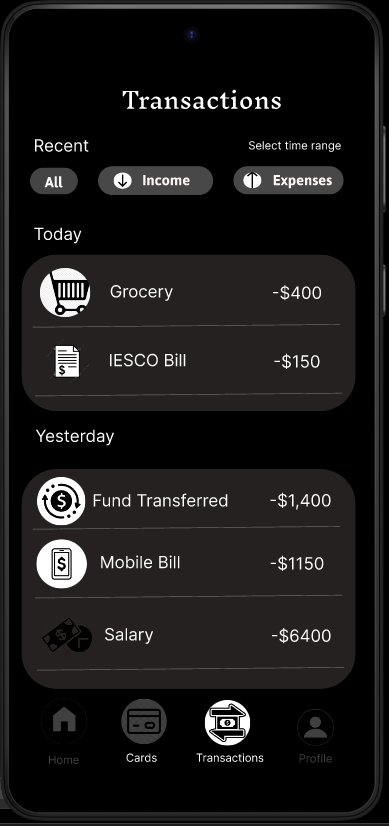
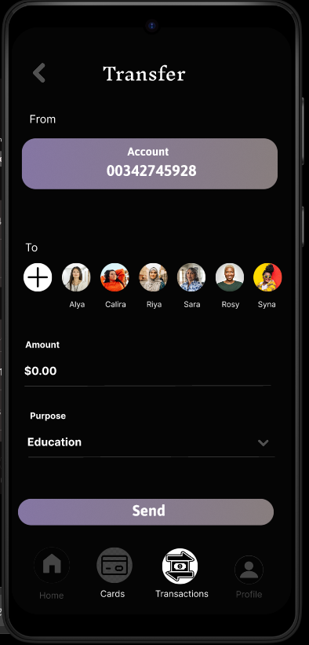
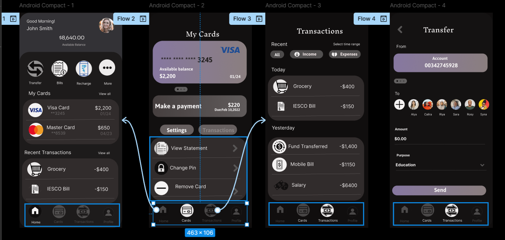
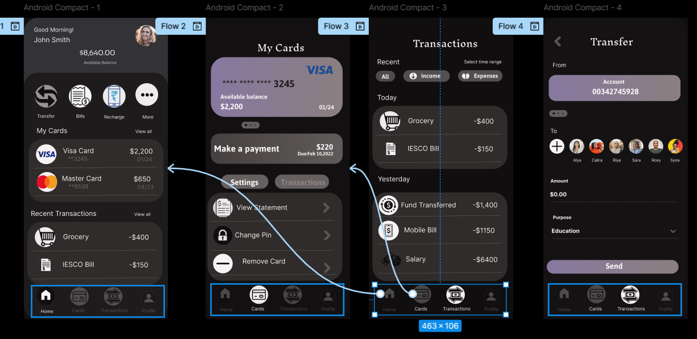
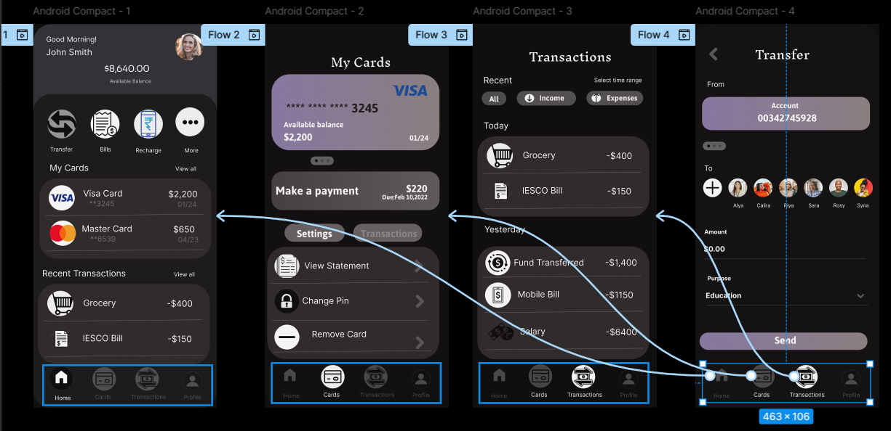
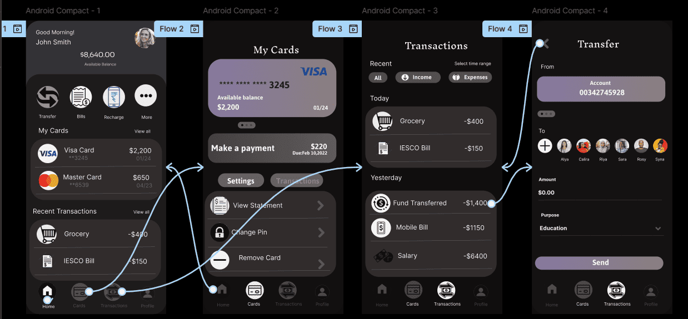

UI/UX Design Assignment
Introduction
In this assignment, we explored the fundamentals of UI/UX design using Figma, a collaborative web application used for interface design and prototyping. We were introduced to the design thinking process, wireframing, user flow planning, and final prototyping of both web and mobile applications. This hands-on experience helped us understand how a user-centric design approach improves product usability and aesthetics.
Key Learning Outcomes
1. Understanding UI vs UX
We began by understanding the difference between UI (User Interface) and UX (User Experience). UX focuses on the overall experience a user has while interacting with a product or system, whereas UI focuses on the actual interface and visual elements like buttons, colors, and layouts.
2. Introduction to Figma
Figma was introduced as a cloud-based design tool. We learned how to:
- Create frames for mobile and desktop devices
- Draw shapes and add images, text, and icons
- Use auto layout to create responsive designs
- Collaborate with others in real-time
3. Wireframing
Before jumping into full design, we created low-fidelity wireframes to plan the layout of the app and website. Wireframes helped us focus on the structure and functionality of the interface without being distracted by color or style.
4. User Flow Mapping
We mapped out user journeys by connecting screens in a logical flow. This step helped us identify how users would navigate through the application. For example, a typical user journey for a shopping app includes: Homepage → Product Page → Cart → Payment → Confirmation.
5. Prototyping
Using Figma’s prototyping features, we created interactive click-through versions of our designs. We added transition animations and links between buttons and screens, making it feel like a real working app. This stage was especially useful for user testing and feedback collection.
6. Design Principles
Throughout the process, we followed key design principles such as:
- Consistency: Repeating elements like fonts and buttons
- Visual hierarchy: Making important elements stand out
- Accessibility: Ensuring contrast, legibility, and usability for all users
7. Real-time Collaboration
One of the most powerful features of Figma is real-time collaboration. We worked in teams, left comments, and updated designs together without needing to send files. This simulated a professional design environment and improved our communication skills.
Final Project
As a culmination of our learning, we designed a complete mobile application for a fictional food delivery service. The app included login/register screens, a home page with categories, product details, cart, and checkout process. We also created a website version of the same service using Figma’s responsive design tools.
User Flow
The user flow was planned using connected frames. Below is the mobile banking app flow we created:
UI Screens




Hardware Wiring Integration
To bring the UI/UX into a real-world simulation, each screen's function was mapped to a physical interface using ESP32, buttons, and sensors.
Wiring Diagrams for Each Screen




Final Wiring Setup
